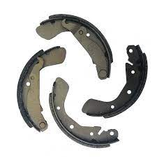
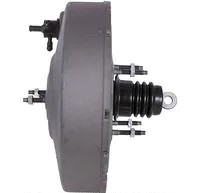

| Imagen |
Descripción / Modelo |
Precio |
|  |
Juego de 4 balatas de freno trasero con tambor para chevy, balatas remanufacturadas,
color negro, garantia de 6 meses en tienda, piezas disponibles 70 packs
|
$ 395.00.- |
 |
Balero maza duralast ensamble de la rueda, Los ensambles de masa Duralast proveen las calidad y confiabilidad
necesarias para restaurar el rendimiento de manejo de su vehículo. garantia de 1 año en tienda
color dorado, peso de 2 kilos, piezas disponibles 70 kits de 4 piezas cada una
|
$ 780.00.- |
 |
Duralast New Cilindro Maestro de Sistema de Frenos Nuestros cilindros maestros NUEVOS ofrecen el
desempeño de frenado que usted espera de una parte nueva de calidad. con un peso de 2 kilos,
color blanco, garantia de 1 año en tienda piezas disponibles 75
|
$ 1,019.00.- |
|  |
Duralast Remanufactured Servo de Freno de Potencia, Las varillas de salida del cilindro maestro son preajustadas
(cuando se incluyen) para una instalación más fácil y rápida, peso de 4.5 kilos, material acero,
3 meses de garantia, piezas disponibles 74
|
$ 1,800.00.- |
 |
Duralast Kit de Mordaza de Frenos, Los pistones de cáliper son de barra de Acero al Carbón con Baño de Cromo
Industrial y el repuesto incluye Liga, Guardapolvo, y Silicón para facilitar el montaje del pistón en la
cavidad del Cáliper. garantia de 1 año en tienda, piezas disponibles 75
|
$ 300.00.- |
 |
Duralast Balero Maza/Ensamble de la Rueda, 1 año de garantia, piezas disponibles 25
|
$ 1,400.00.- |
 |
Duralast Tambor de Freno, Nuestros rotores Duralast pueden reemplazar las partes de
OE sin cambio en rendimiento y seguridad, material aleacion de hierro, peso de 4 kilos
garantia de 6 meses en tienda, piezas disponibles 89
|
$ 580.00.- |